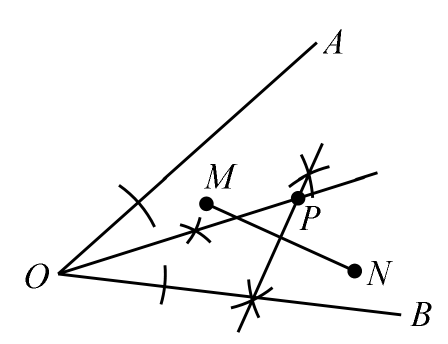

先用顶点圆截出 U、V，再以 U、V 为圆心画等半径圆弧，取交点 X。连接 OX。
作图步骤
以 M、N 为圆心，用同一半径画弧，交于 C、D。连接 CD。
OX 与 CD 交于 P。P 在角平分线上，故到角两边等距；在 MN 垂直平分线上，故 PM＝PN。

先用顶点圆截出 U、V，再以 U、V 为圆心画等半径圆弧，取交点 X。连接 OX。
以 M、N 为圆心，用同一半径画弧，交于 C、D。连接 CD。
OX 与 CD 交于 P。P 在角平分线上，故到角两边等距；在 MN 垂直平分线上，故 PM＝PN。
